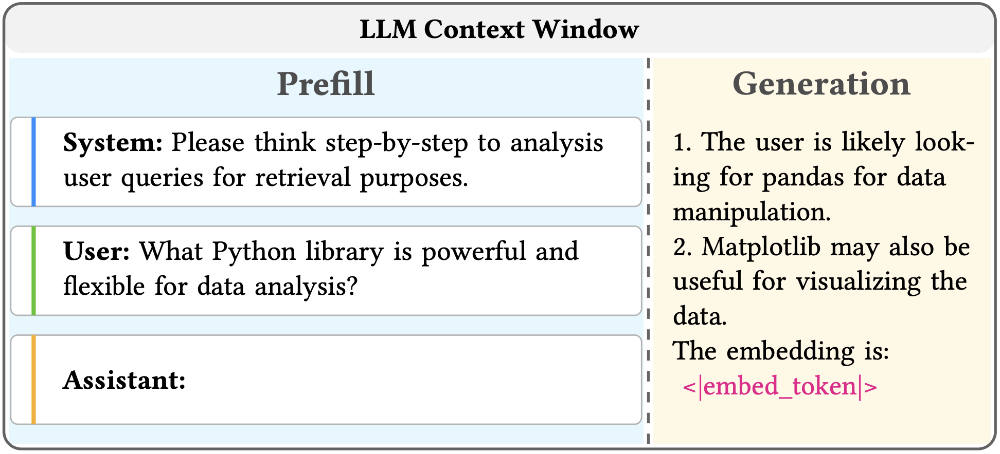
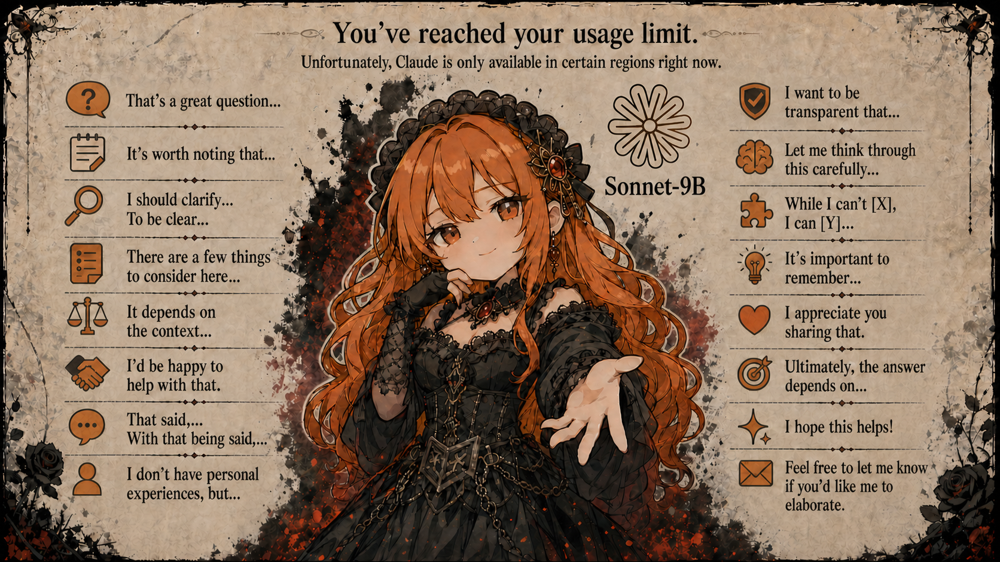

Research Assistant and Ph.D in Computer Science Engineering at The Chinese University of Hong Kong.
2021–2026GPU Optimization, Agentic System, LLM Post-training.
Software Engineer at Huawei 2012 Labs.
2018.10–2020.6Huawei's GPU/NPU Project: operator, runtime, compiler optimization. Work based on Shanghai and Hangzhou, quit the job during COVID-19.
B.Eng of Computer Science and Automation at Chongqing University.
2014–2018Member of MSRA Student Association; Member of DJI RoboMaster Team.
Search-R3: Unifying reasoning and embedding in large language models — Y Gui et al.
under-reviewPost-trains LLMs to produce latent embedding representations.
PilotANN: Memory-bounded gpu acceleration for vector search — Y Gui et al.
SIGKDDGPU acceleration for vector search in RAG pipelines.
SPT: Fine-tuning transformer-based language models efficiently with sparsification — Y Gui et al.
preprintA sparse attention approach developed concurrently with DeepSeek Sparse Attention (DSA), discontinued as DSA proved superior.
HGL: Accelerating heterogeneous GNN training with holistic representation and optimization — Y Gui et al.
SC20× GPU speedup by compiler optimization on traditional neural networks.
Vertex-centric visual programming for graph neural networks — Y Wu, Y Gui, et al.
SIGMODAn MLOps platform for recommendation systems.

Search-R3, a novel post-training framework that adapts LLMs to generate search embeddings directly through their chain-of-thought reasoning process.

Qwen3.5-Sonnet-9B, an offline-RL distilled LLM for agentic coding. FP8-quantized, fits on a single 24 GB GPU with 200K context, optimized for long tool-call chains in agents like OpenCode and Claude Code.